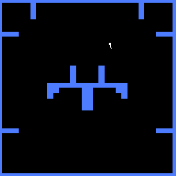

Imitation Learning for Xpilot
Training robust agents from multiple specialists using structured-state demonstrations
Project by Muhammad Abdullah for COM 407. Demonstrations from specialist agents are used to train a behavior-cloning model that maps 17 structured inputs to 4 discrete actions.

Overview
This project studies whether combining demonstrations from agents specialized in different skills produces a stronger imitation policy. Demonstrations were collected from an expert system in competitive play.
Training map
lifeless.xp
Data collection
Expert agent ran for over 15 minutes while competing with another copy of the same agent to generate demonstrations.
Libraries
PyTorch · Matplotlib · scikit-learn
Methodology
Behavior cloning using supervised learning on recorded state-action pairs. Inputs are normalized structured features; outputs are discrete action logits.
Network
Fully connected neural network with 2 hidden layers, 128 neurons each.
Outputs: shoot · turnLeft · turnRight · thrust
Training
10000 epochs · learning rate 0.001 · optimizer: Adam
Inputs (17 features)
- agent_heading
- agent_tracking
- agent_speed
- agent_aim
- shot_alert
- front_dist
- back_dist
- back_left_dist
- back_right_dist
- closest_dist
- furthest_dist
- closest_angle
- furthest_angle
- heading_tracking_diff
- closest_diff
- furthest_diff
- aim_diff
Results
Model achieved high per-action accuracy on held-out demonstration data.
Per-action accuracy
- Thrust: 96.86%
- turnLeft: 96.49%
- turnRight: 96.34%
- fireShot: 98.79%
Overall accuracy (all 4 actions combined): 91.74%
Training details
10000 epochs · learning rate 0.001
Loss / error over training

Training map (visualized)
Further Expected Outcomes
- A trained imitation learning model capable of playing XPilot competently using data from multiple experts.
- Insight into whether diverse training sources improve generalization and performance compared to single-expert imitation.
- Compare combined-policy performance to single-expert and multi-task approaches.
Future Work
- Fine-tune the combined model with reinforcement learning.
- Compare combined-policy performance to single-expert and multi-task approaches.
Contact
Muhammad Abdullah
COM 407 · Connecticut College
Email: mabdullah@conncoll.edu
GitHub: github.com/mabdullah1010